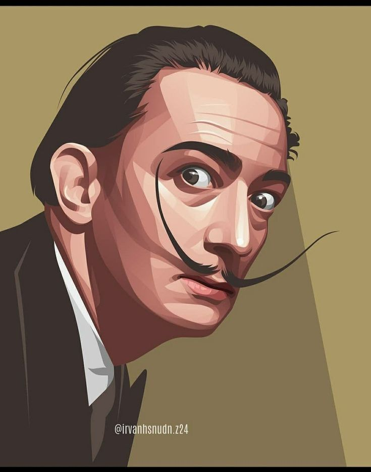
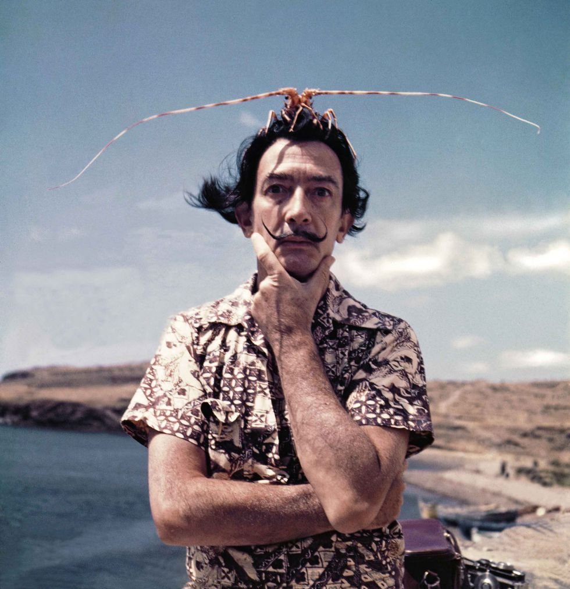
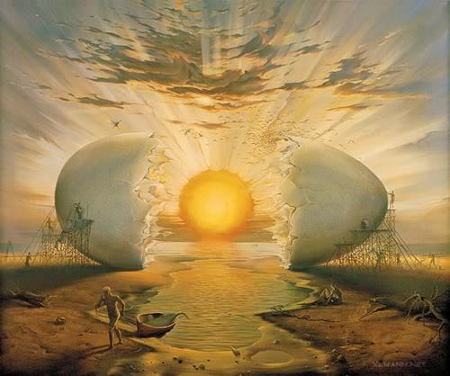
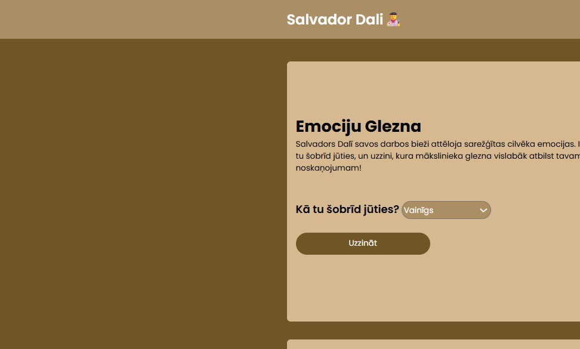
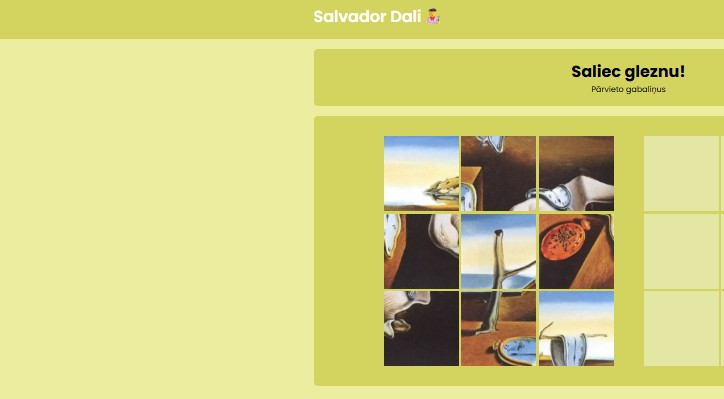
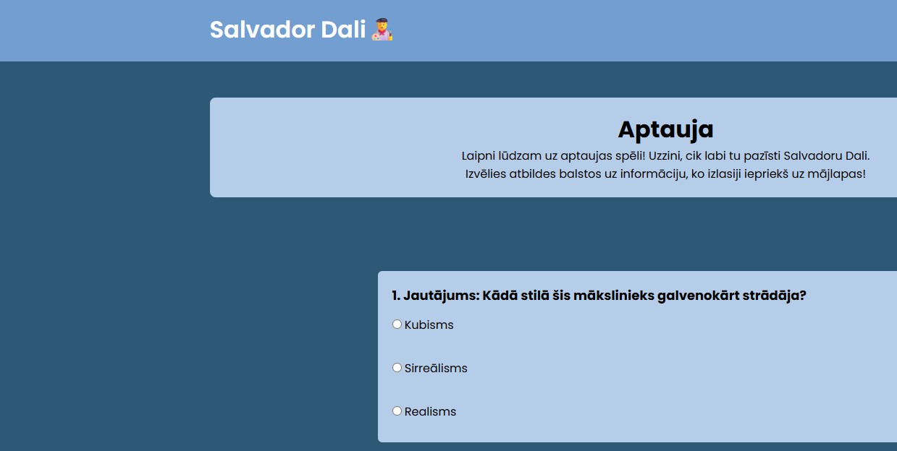

Vai jūs kādreiz esat dzirdējuši par tādu mākslinieku kā Salvadors Dalī?
Šī saite būs ideāla iespēja to izdarīt.
Jūs uzzināsiet par viņa dzīvi, iepazīsieties ar viņa mākslas stilu un gleznām, kā arī varēsiet spēles veidā aplūkot viņa izcilos darbus, uzzināt, kāda glezna esi tu šodien, un beigās pārbaudīt savas zināšanas par Salvadoru Dalī izpildot testu.


Salvadors Dalī ir viens no ekscentriskākajiem un slavenākajiem māksliniekiem, tāpēc vinš ātri kļūva populārs.
Dalī radīja māksliniecisku valodu, kurā paradokss kļuva par normu, bet neprāts – par radošo metodi, un zēna talants jau bija redzams agrā bērnībā: 6 gadu vecumā viņš radīja savus pirmos nopietnos zīmējumus un 10 gadu vecumā viņš bija aizrāvies ar impresionismu.
Taču Maestro ne tikai prata zīmēt, bet arī bija izgudrotājs. Piemēram, viņš izgudroja ovosipēdu – pārvietošanās līdzekli caurspīdīgas sfēras formā ar sēdekli iekšpusē, kuru vēlāk izmantoja kā parvietošanas līdzekli Parīzē.
Vār ari teikt kā Dalī ir ļoti pretrunīgs cilvēks. Lai gan daudzās viņa gleznās ir attēlotas melnas skudras, lieli sienāži un krāsaini tauriņi, viņam bija dziļa fobija pret kukaiņiem.Laiks līdz Dalī dzīmšanas dienai...
Salvadors Domingo Felipe Hasinto Dalī i Domenečs jeb Salvadors Dalī, bija izcilais spāņu sirreālisma mākslinieks kurš savas dzīves laikā uztaisija vairāk nekā 1500 gleznas.
Ēdienam un ēšanai ir būtiska vieta Dalī domās un daiļradē. Viņš ēdienu saistīja ar skaistumu un seksu, un bija apsēsts ar dievlūdzēja mātītes tēlu, kas pēc pārošanās ēd savu pārinieku. Maize bija atkārtots tēls Dalī mākslā, sākot ar viņa agrīno darbu "Maizes grozs" līdz vēlākām publiskām uzstāšanās reizēm, piemēram, 1958. gadā, kad viņš Parīzē nolasīja lekciju, izmantojot 12 metrus garu bageti kā ilustratīvu rekvizītu. Viņš uzskatīja maizi par "nepārtrauktības pamatu" un "svēto iztiku".
Ola ir vēl viens izplatīts Dalīnija tēls. Viņš saista olu ar pirmsdzemdību un intrauterīnu sfēru, tādējādi izmantojot to kā cerības un mīlestības simbolu. Tā parādās darbā "Lielais masturbators", "Narcisa metamorfoze" un daudzos citos darbos. Dalī mājā Portlligatā, kā arī Dalī teātrī-muzejā Figueresā ir arī milzīgas olu skulptūras dažādās vietās.

Gleznu galereja

Spele1

Spele2
2. spēle: “Dalī puzles”
Saliec puzles ar Salvadora Dalī gleznām un iepazīsti viņa mākslu.
Spēlēt tagad

Spele3
3. spēle: “Dalī tests”
Pārbaudi savas zināšanas par Salvadoru Dalī, atbildot uz jautājumiem.
Spēlēt tagad